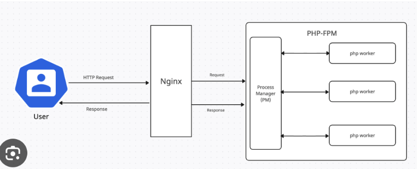
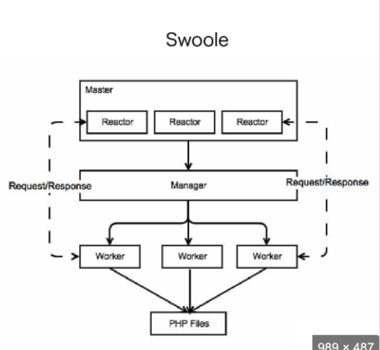
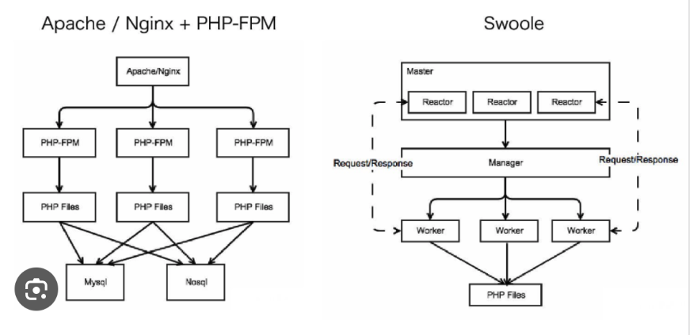

As duas principais formas de utilizar o PHP são por scripts executados por linhas de comando (CLI) ou por scripts no lado do servidor, afim de processar algo e retornar para o navegador (WEB). Seguem mais detalhes sobre.
A utilização dos scripts do lado do servidor (server-side) é o mais comum entre todos, isso devido a ser extremamente fácil de executar com o PHP, precisando apenas do interpretador do PHP (CGI - Common Gateway Interface), o servidor WEB e navegador.
Para utilizar o PHP via linha de comando basta apenas ter o PHP instalado, normalmente utilizados juntos com agendadores de tarefas ou algo do tipo.


A princípio, o PHP-FPM é um interpretador do PHP que se comunica com o nginx (ou outro servidor web) para poder receber e responder requisições. Já o Swoole, é um interpretador de PHP e também um mecanismo de comunicação de rede (nginx) - sendo possível utilizar com ou sem o nginx dependendo da necessidade.

Descrição da arquitetura será adicionada aqui.